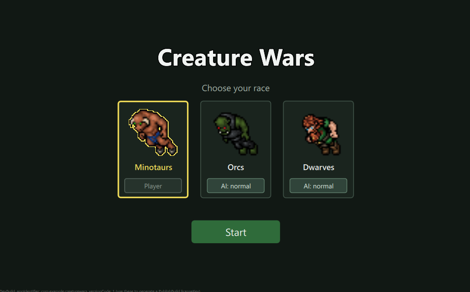

Tutorial 1: What We Build
We build a small real time strategy game with Felgo. Three races share one map. Each race has a base that makes units, researches upgrades and shoots at enemies. You play one race, the computer plays the others. The last base standing wins.

The start screen.
What you learn
- Setting up a Felgo game with CMake.
- Scenes, scaling and switching screens with
GameWindowandScene. - Animated sprites with TexturePacker and images for several screen densities.
- Short lived effects with
EntityManager. - Keeping game rules in a C++ core and showing them in QML.
How the game is split
- C++ core in
backend. Owns the game state and all rules. No Qt inside. - Felgo client in
qml. Draws what the core reports and sends player input.
Why not only QML? Most Felgo games keep their logic in QML, often with EntityManager and physics. That is the fastest way for a small game. We put the rules in C++ because the game should later run on a server, like an online RPG. Chapter 5 explains it.
How to use this tutorial
Every code block comes straight from the repository, with the file name. Read a chapter, open the file, run the game and compare.